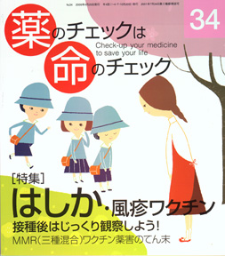

No.34 特集 はしか・風疹ワクチン 2009年4月 発行
2007年に若者たちの間で、はしか（麻疹）が流行しました。この子らが乳幼児だった頃に、 三種混合（はしか、おたふくかぜ、風疹：MMR）ワクチンによる害反応（無菌性髄膜炎）で多くの被害者を生みました。 混合ワクチンに対して多くの人々が不信感を持った事件でした。
今回、二種混合（はしか、風疹：MR）ワクチンを特集するに際して、MMRワクチン事件をおさらいしておきたいと思います。
MMR事件のありようを知れば知るほど、ワクチン行政のいい加減さ、メーカーの不誠実な対応に、 読者はあきれ果ててしまうのではないでしょうか。
わたしたちは、子どもを守るために、またわが身を守るために、 被害の歴史を知っておくことが大切だと思います。その上で、 現在のMRワクチンの効果と害について、考え、判断しましょう。
もくじ
特集 はしか・風疹ワクチン
■ MMRワクチン年表 編集部
■ MMR（三種混合）ワクチン薬害事件の顛末 隈本邦彦
■ はしかとは、風疹とは／はしか予防接種年表
■ 山本英彦さん（小児科医）に聞く ー麻疹・風疹ワクチンのこと、知りたい！
■ 小船富美夫さんとのQ&A ー麻疹ワクチンは必要不可欠
■ 母里啓子さんに聞く ー慌てず、騒がず、じっと観察しましょう
■ MRワクチン接種に関する本誌の見解 編集部
■ コーヒー無礼区
■ 新薬承認のカラクリ MRワクチンの治験データ 編集部
■ 害反応について 浜 六郎
■ 麻疹の歴史 痘瘡と同じように恐れられた麻疹 谷田憲俊
報告
■ 第6回医薬ビジランスセミナー 基調講演
■ 強まる薬害の危険と医薬ビジランスセンターの役割 浜 六郎
連載
■ 新連載 医師国家試験に挑戦しよう！ 木元康介
■ リレーエッセー いただきます！ 中村朱里
■ みんなのやさしい生命倫理（34） 生老病死（4） 谷田憲俊
■ EBM超入門（最終回） DIPEx（5） 別府宏圀
その他
■ 朝日新聞社説を斬る！ 編集部
■ 医師国家試験に挑戦しよう！ 解答と解説
■ 質問箱（１）妊娠・授乳中の牛乳で子どもがアレルギーに？
（２）抗精神薬を飲んでいても母乳育児は大丈夫？
（３）テレビで紹介された漢方薬は大丈夫？
（４）インフルエンザ予防接種をしていないが、大丈夫でしょうか？
（５）大腸がん検査を受けたいが、急ぐ必要はあるか？
■ 読者の声
■ 書評（１）たった1人で国・薬害裁判に勝つ
（２）「生きづらさ」について 貧困、アイデンティティ、ナショナリズム
（３）ぬれマスク先生の免疫革命
（４）医者と患者と病院と
■ 用語の解説（記事に出てくる医学用語や統計学用語などを解説）
■ 「薬のチェックは命のチェック」のバックナンバー案内
■ 33号クイズの解答／モニター募集
■ 申し込み用紙
■ 編集後記